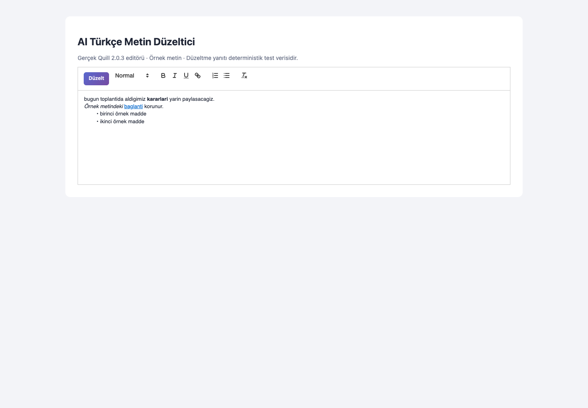
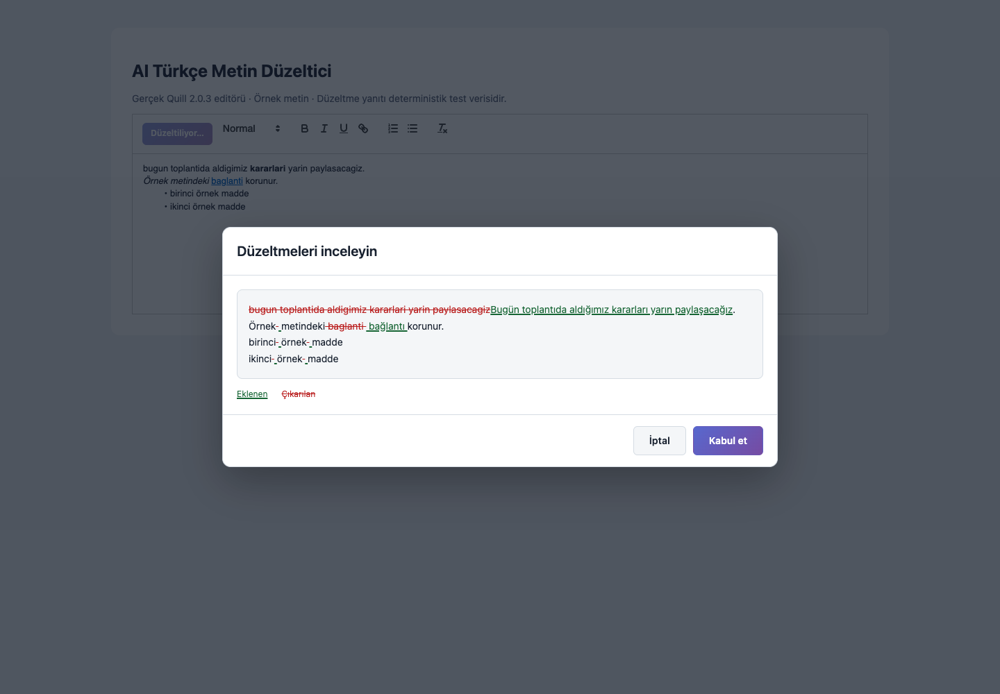
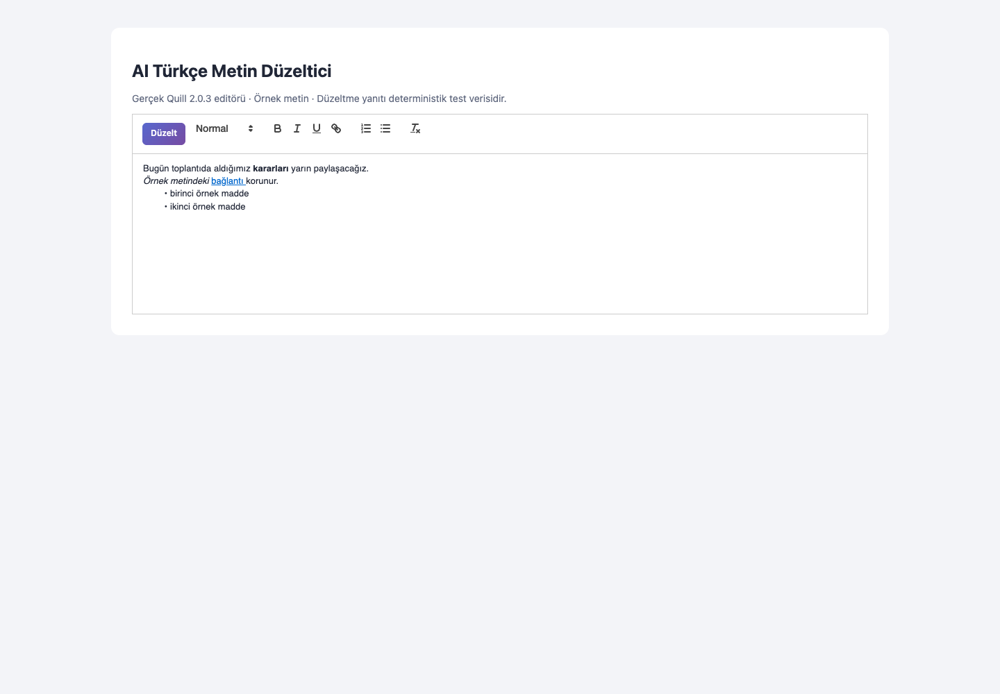
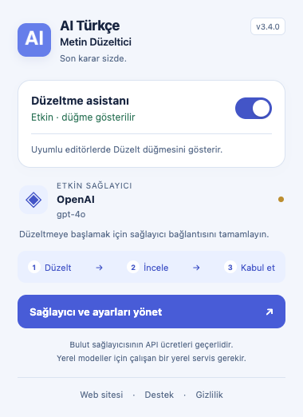
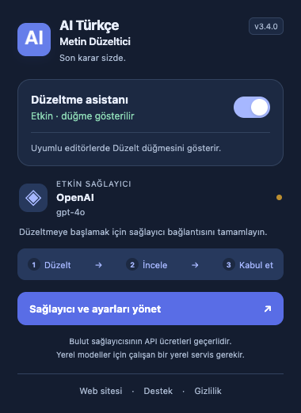
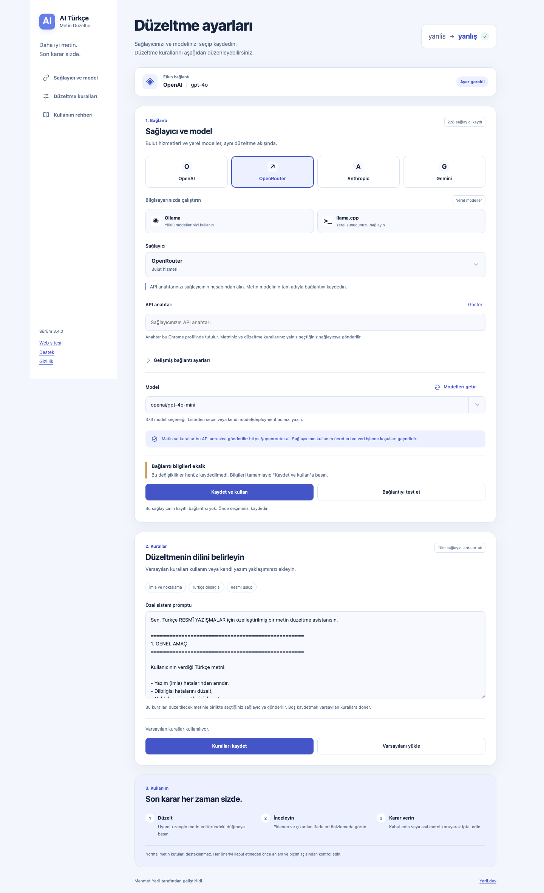
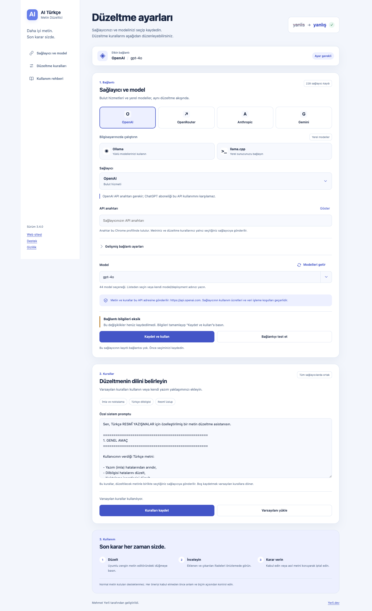
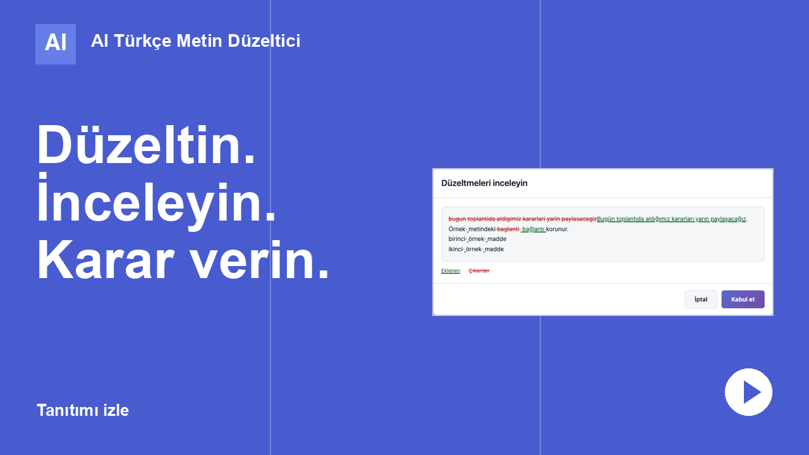

AI Türkçe Metin DüzelticiMasaüstü Chrome eklentisi · Mehmet Yerli
Türkçe metninizi düzeltin, değişikliklere siz karar verin.
Uyumlu zengin metin editörlerinde imla, noktalama ve resmî üslup önerileri. Sonucu inceleyin, uygun bulursanız kabul edin.
Chrome Web Store · Masaüstü Chrome 111 veya üzeri
-
Bulut sağlayıcısı
Kendi API anahtarınız veya erişim belirteciniz gerekir. Kullanım, sağlayıcınız tarafından eklentiden ayrı ücretlendirilir.
-
Yerel model
Ollama veya llama.cpp gibi bilgisayarınızda çalışan bir servis ve yüklü bir model gerekir. İstek bu yerel sunucuya gider.
-
Uyumlu editörler
CKEditor 4/5, Summernote, TinyMCE ve Quill'in test edilmiş standart kurulumları. Normal metin kutuları desteklenmez.
Açıklayıcı örnek
Önce öneriyi görün, sonra karar verin.
Bu örnek elle hazırlanmıştır ve kişisel veri içermez. Canlı bir yapay zekâ sonucu değildir; gerçek öneriler metne, kurallara ve seçtiğiniz modele göre değişir.
Önce
bugun toplantida aldigimiz kararlari yarin paylasacagiz. herkesin gorusunu bekliyoruz.
İnceleme
bugunBugün toplantidatoplantıda aldigimizaldığımız kararlarikararları yarinyarın paylasacagizpaylaşacağız. herkesinHerkesin gorusunugörüşünü bekliyoruz.
- Eklenen: altı çizili
- Çıkarılan: üstü çizili
Sonra
Bugün toplantıda aldığımız kararları yarın paylaşacağız. Herkesin görüşünü bekliyoruz.
Kabul ederseniz editöre bu metin yazılır. İptal asıl metni korur.
Nasıl çalışır
Düzelt, inceleyin, karar verin.
Düzeltme isteğini siz başlatırsınız. Öneri önce önizlenir; siz kabul etmeden editördeki metin değişmez.
-
01
Düzelt
Uyumlu editörün araç çubuğuna eklenen Düzelt düğmesine basın. Metin ve düzeltme kuralları, ayarlarda seçtiğiniz bağlantıya gönderilir. Siz basmadan hiçbir metin gönderilmez.

Görsel bekleniyorassets/img/editor-before.pngGerçek Quill akış görüntüsü bu dosya adıyla eklenecek.Quill 2.0.3, düzeltmeden önce. Tam boyutta aç -
02
İnceleyin
Düzeltmeleri inceleyin penceresinde eklenen ifadeler altı çizili, çıkarılan ifadeler üstü çizili gösterilir. Biçimler güvenle eşleştirilemezse sonucun düz metin olarak uygulanacağı ayrıca belirtilir.

Görsel bekleniyorassets/img/editor-preview.pngGerçek değişiklik önizlemesi bu dosya adıyla eklenecek.Değişiklik önizlemesi. İptal ve Kabul et aynı satırdadır. -
03
Kabul edin ya da iptal edin
Karar her zaman sizdedir. Öneriyi anlam ve biçim açısından kontrol edin; eklenti her hatayı bulacağını vaat etmez.
Kabul etÖneri editöre uygulanır.İptal veya EscAsıl metin korunur.
Görsel bekleniyorassets/img/editor-accepted.pngKabul sonrası gerçek editör görüntüsü bu dosya adıyla eklenecek.Kabul edildikten sonra: biçimler korunmuş. Tam boyutta aç


Bu görüntüler gerçek Quill editöründe, kontrollü örnek yanıtla kaydedildi. Canlı model kalitesini göstermez.
Editör desteği
Test edilmiş editörler ve sınırlar
Tablo, sürüm 3.4.0 kaynaklarının standart (classic) editör kurulumlarıyla yapılan yerel tarayıcı testlerine dayanır. Mağazadan kurulan eklentiyle henüz tekrarlanmadı. Bir editörün test edilmiş olması, onu kullanan her sitede çalışacağı anlamına gelmez.
| Editör | Test edilen sürüm |
|---|---|
| CKEditor 4 | 4.22.1 |
| CKEditor 5 | 48.5.2 |
| Summernote | 0.9.1 (jQuery 3.7.1) |
| TinyMCE | 8.9.2 |
| Quill | 2.0.3 ve 1.3.7 |
Genel destek verilmeyen durumlar
- Normal metin kutularıinput ve textarea alanlarına Düzelt düğmesi eklenmez.
- PlatformlarWordPress, Drupal, Joomla ve Notion için ayrıca platform testi yapılmadı. Sitenin editör kurulumu, sürümü ve özelleştirmeleri sonucu etkiler.
- Özel editör yapılarıÇok köklü veya ortak düzenleme editörleri, kapalı shadow DOM ve ayrı iframe uygulamaları için genel destek verilmez.
- BiçimlerParagraf, liste, bağlantı ve kalın/italik biçimler güvenli eşleme yapılabildiğinde korunur. Yapısal değişikliklerde düz metne dönüşme uyarısı görebilirsiniz.
Kurulum
Altı adımda hazır
Sağlayıcı, model, anahtar ve bağlantı bilgileri tek bir ayarlar ekranında yönetilir. Takılırsanız bağlantı izni, yerel sunucu ve düğme görünmemesi çözümlerine bakın.
01
Mağazadan ekleyin
Eklentiyi Chrome Web Store'dan masaüstü Chrome'a ekleyin.
02
Sağlayıcıyı ve modeli seçin
Ayarlarda sağlayıcıyı arayın veya listeden seçin. Modeli katalog önerilerinden seçin ya da tam adını girin.
03
Anahtarı veya yerel adresi kaydedin
Bulut için API anahtarınızı veya erişim belirtecinizi, gerekiyorsa hesap ve bölge alanlarını girin. Yerel servis için localhost adresini kullanın.
04
Bağlantı iznini verin
Kaydederken Chrome, yalnız seçilen API adresi ve gerekiyorsa belirteç adresi için izin ister. Bu izin, editörlerin bulunduğu sayfalarla ilgili değildir.
05
Kuralları düzenleyin
İsteğe bağlı
Varsayılan kurallar Türkçe imla, noktalama, dilbilgisi ve resmî üslup içindir. Kendi sistem promptunuzu yazabilirsiniz.
06
Düzeltin ve inceleyin
Uyumlu editörde Düzelt'e basın, değişiklikleri inceleyin, ardından Kabul Et ya da İptal'i seçin.
Ücret ve veri akışı
Ne ödersiniz, metniniz nereye gider?
Eklenti size API kredisi sağlamaz ve geliştiricinin sunucusuna metin göndermez. Düzeltme, sizin seçtiğiniz servise sizin hesabınızla yapılan bir istektir.
Ücret
- EklentiChrome Web Store'dan ücretsiz kurulur. Hesap veya abonelik yoktur.
- Bulut sağlayıcıHer düzeltme ve bağlantı testi, sağlayıcınızın fiyatlandırmasıyla kendi hesabınızdan ücretlendirilir. ChatGPT, Claude veya Copilot aboneliği API anahtarının yerine geçmez.
- Yerel sunucuİstek bilgisayarınızdaki sunucuya gider. Sunucuyu ve modeli siz çalıştırırsınız; başka bir servise yönlendirip yönlendirmediğini siz belirlersiniz.
- DeğişiklikModel veya sağlayıcı değiştirmek ücreti ve veri işleme koşullarını değiştirebilir.
Veri akışı
- GönderilenEditördeki metin ve düzeltme kuralları
- GönderenTarayıcınızdaki eklenti
- AlıcıYalnız etkin sağlayıcının kayıtlı API adresi
- Anahtar ve özel prompt bağlantı profilleriyle birlikte bu Chrome profilinde,
chrome.storage.localiçinde tutulur. Yalnız aç/kapa ayarıchrome.storage.syncile eşitlenebilir. - Anahtar veya belirteç ilgili istekte kimlik doğrulama için kullanılır. IBM ve SAP bağlantılarında önce hizmetin belirteç sunucusuyla kimlik değişimi yapılır; metin ve kurallar belirteç sunucusuna gönderilmez.
- Geliştiriciye metin aktarımı, reklam, analitik veya telemetri yoktur. Bu, kullanımın tamamen yerel olduğu ya da sağlayıcının veriyi saklamayacağı anlamına gelmez.
- Başka bir sağlayıcıya kendiliğinden yedek geçiş yapılmaz.
Gerçek arayüz
Popup ve ayarlar
Görüntüler sürüm 3.4.0 ile yerel eklenti testinden alınmıştır. Doğrulanan mağaza sürümü 3.4.0; ekranlardaki sürüm farklıdır.
Popup
Eklenti simgesinden açılır. Açık ve koyu temada aynı bilgiyi verir.
- Düzeltme asistanını açma ve kapatma
- Etkin sağlayıcı ve model
- Düzelt → İncele → Kabul et akışı
- Sağlayıcı ve ayarları yönetme


Ayarlar: sağlayıcı ve model
Bulut hizmetleri ve yerel modeller aynı ekranda seçilir.
- Etkin bağlantı özeti
- Aranabilir sağlayıcı seçimi ve sık kullanılanlar
- Model listesi, elle model adı ve Modelleri getir
- API anahtarı ve gelişmiş bağlantı ayarları
- Metnin gideceği adresin gösterimi, kaydetme ve test


Ayarlar: ortak kurallar ve kullanım rehberi
Düzeltme kuralları seçtiğiniz bütün sağlayıcılarda ortaktır.
- İmla ve noktalama, Türkçe dilbilgisi, resmî üslup
- Özel sistem promptu
- Varsayılan kurallara dönme


Tanıtım
Akışı videoda izleyin
Oynatıcı yalnız düğmeye bastığınızda youtube-nocookie.com üzerinden yüklenir ve sessiz başlar.

Hangi sağlayıcıları seçebilirim?
Ayarlar ekranında OpenAI, OpenRouter, Anthropic, Google Gemini, Groq, DeepSeek, Mistral ve diğer API servislerini; Azure, Vertex ve Bedrock gibi ek hesap, bölge veya proje alanı isteyen servisleri; IBM watsonx (IAM) ve SAP AI Core (hizmet kimliği ve deployment) bağlantılarını; Ollama ve llama.cpp gibi yerel servisleri seçebilirsiniz.
Katalog OpenCode'un kullandığı Models.dev kaynağından hazırlanır; özel bir API adresi de girebilirsiniz. Katalogda görünmek, her modelin canlı test edildiği veya hesabınızla çalışacağı anlamına gelmez. Erişiminizi Bağlantıyı test et ile doğrulayın.
Katalogda görünen bazı hizmetler neden etkinleştirilemiyor?
GitHub Copilot, GitLab Duo ve v0 kendi ürün oturumunu, girişini veya çalışma akışını gerektirir. Katalogda açıklamalarıyla görünürler; bu eklentide doğrudan etkinleştirilemezler.
Görsel, ses, gerçek zamanlı veya özel araç akışı gerektiren modeller de metin düzeltme adaylarından ayrılır.
API anahtarı veya erişim belirteci neden gerekiyor?
Her düzeltme, seçtiğiniz sağlayıcının API'sine sizin hesabınızla yapılan bir istektir. Sağlayıcı isteği anahtar veya belirteçle doğrular ve kullanımı hesabınıza yazar. Eklenti API kredisi sağlamaz.
ChatGPT, Claude veya Copilot aboneliği API anahtarının yerine geçmez. IBM watsonx ve SAP AI Core bağlantılarında anahtar veya hizmet kimliği önce kısa ömürlü bir erişim belirtecine dönüştürülür.
Yerel model nasıl kullanılır?
Ayarlarda Ollama veya llama.cpp'yi seçin. Ollama için aynı ekrandaki bağlantı yardımını izleyerek sunucuyu bu eklentiye özel izinli komutla başlatın. Yerel adrese Chrome iznini verdikten sonra yüklü modeller listelenir; bir model seçip Kaydet ve kullan'a basın. Sunucu adresini değiştirdiğinizde Modelleri getir ile yeni adresteki listeyi alın.
Yerel bağlantıda HTTP kullanılabilir ve istek bu sunucuya gider; bulut sağlayıcısı gibi internet gerektirmeyebilir. Sunucu kapalıysa veya model yüklü değilse düzeltme yapılamaz.
Ücretsiz mi ve sağlayıcı ücreti nasıl ayrılıyor?
Eklenti Chrome Web Store'dan ücretsiz kurulur; hesap veya abonelik yoktur. Bulut sağlayıcısı kullanıyorsanız her düzeltme ve her bağlantı testi, sağlayıcınızın fiyatlandırmasıyla kendi hesabınızdan ücretlendirilir.
Model veya sağlayıcı değiştirmek ücreti değiştirebilir. Bakiye ve kotanızı sağlayıcı hesabınızdan izleyin.
Hangi editörlerde çalışır?
Test edilen standart kurulumlar: CKEditor 4 (4.22.1), CKEditor 5 (48.5.2), Summernote (0.9.1), TinyMCE (8.9.2) ve Quill (2.0.3, 1.3.7). Bir editörün test edilmiş olması, onu kullanan her sitenin desteklendiği anlamına gelmez.
WordPress, Drupal, Joomla ve Notion için ayrıca platform testi yapılmadı. Normal input ve textarea alanları desteklenmez.
Düğme neden görünmeyebilir?
Alan normal bir metin kutusu olabilir, editör desteklenen türde olmayabilir ya da özelleştirilmiş, ayrı iframe, kapalı shadow DOM veya çok köklü bir yapıda çalışıyor olabilir. Eklenti popup'tan kapatılmış veya sayfa eklentiden önce açılmış da olabilir; bu durumda sayfayı yenileyin.
Biçimler her zaman korunur mu?
Her durumda değil. Paragraf, liste, bağlantı ve kalın/italik biçimler güvenli eşleme yapılabildiğinde korunur. Yapısal değişikliklerde önizleme, sonucun düz metin olarak uygulanacağını ve biçimlerin kaldırılacağını belirten bir uyarı gösterebilir. Kabul etmeden önce önizlemeyi kontrol edin.
Sonuç otomatik uygulanır mı?
Hayır. Öneri önce önizlemede gösterilir; siz Kabul Et'e basmadan editördeki metin değişmez. İptal veya Escape önizlemeyi kapatır.
Düzeltme sürerken metni değiştirirseniz yeni metniniz korunur ve eski yanıt uygulanmaz; Düzelt'i yeniden kullanın.
Metin nereye gönderilir?
Düzelt'e bastığınızda editördeki metin ve düzeltme kuralları yalnız etkin sağlayıcının kaydedilmiş API adresine gönderilir; anahtar veya belirteç bu istekte kimlik doğrulama için kullanılır. Yerel adres seçtiyseniz istek yerel sunucuya gider.
IBM watsonx'te API anahtarı IBM IAM belirteç sunucusuna, SAP AI Core'da Client ID ve secret hizmetin belirteç sunucusuna gönderilir. Metin ve kurallar bu belirteç sunucularına gönderilmez. Ayrıntılar gizlilik politikasında.
Anahtar ve prompt nasıl temizlenir?
Ayarlarda bir sağlayıcının anahtar alanını boş kaydetmek o profilin anahtarını temizler; sağlayıcı değiştirmek diğer profilleri silmez. Özel promptu boş kaydetmek ya da varsayılanı yükleyip kaydetmek özel promptu kaldırır.
Eklentiyi Chrome'dan kaldırmak, o Chrome profilindeki eklenti verilerini kaldırır. Sağlayıcıya daha önce gönderilmiş veriler için sağlayıcınızın hesap kontrollerini kullanın.
Hatalarda ne yapmalıyım?
Hata mesajı nedeni Türkçe olarak belirtir: eksik veya geçersiz anahtar, bağlantı izni, kota, istek sınırı, zaman aşımı ya da geçersiz yanıt. Bu durumlarda asıl metniniz korunur.
Hata mesajları ve çözümleri sayfasındaki adımları izleyin. Sorun sürerse e-posta veya GitHub Issues ile bildirin; API anahtarınızı, özel promptunuzu veya gizli metninizi paylaşmayın.
Telefonda kullanabilir miyim?
Hayır. Eklenti masaüstü Chrome içindir. Bu sayfayı telefonda inceleyebilir, kurulumu bilgisayarınızda yapabilirsiniz.
Destek ve geliştirici
Yardım ve iletişim
Sorun bildirirken Chrome, eklenti ve editör sürümünü paylaşın. API anahtarınızı, özel promptunuzu veya gizli metninizi paylaşmayın.
- Destek sayfası Kurulum, düğme görünmemesi, bağlantı izni ve hata mesajları.
- Gizlilik politikası Hangi verinin nerede tutulduğu ve nereye gönderildiği.
- Sorun bildir GitHub Issues — herkese açıktır.
- E-posta iletisim@mehmetyerli.com
- Kaynak kod github.com/mytsx/duzelt-ai
- Yerli.dev Mehmet Yerli ve Yerli Developer ürünleri.
Daha iyi metin. Son karar sizde.
Masaüstü Chrome için. Bulut sağlayıcılarında kendi API anahtarınız gerekir ve kullanım ayrıca ücretlendirilir.